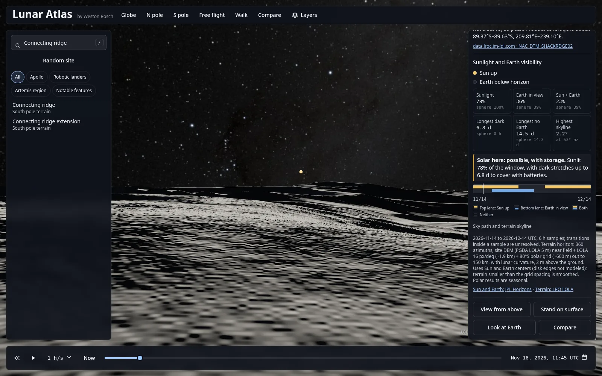
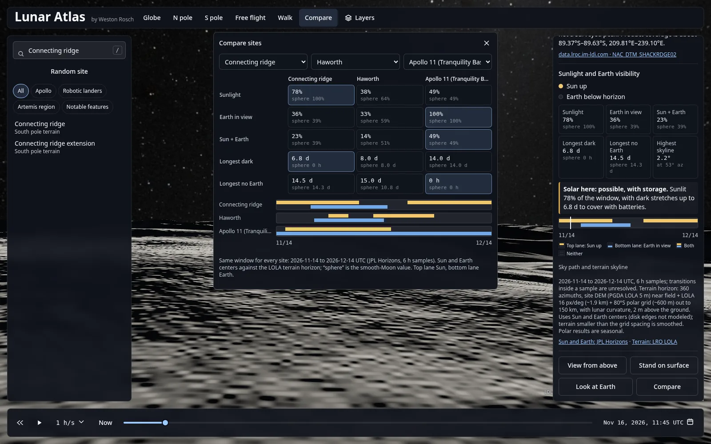
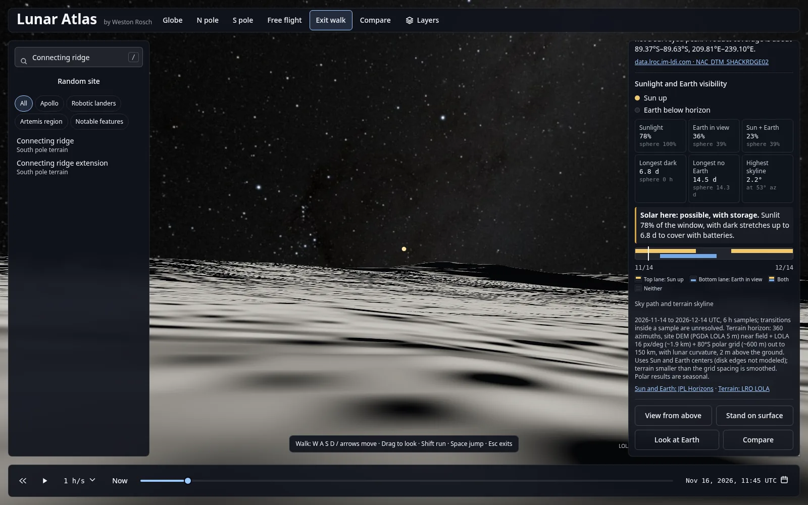

Centauri Lunar Atlas
I built Lunar Atlas over a weekend at the NASA Space Apps 2026 event in Mountain View, as a solo entry for the Lunar Landing Site Navigator challenge. You pick a landing site and a date window, then see how the real terrain changes your sunlight and your line of sight back to Earth.

What you can do
The globe has the Apollo landing sites, robotic landers such as Luna and Chang’e, NASA’s nine Artemis III candidate regions, and south pole spots like Connecting ridge and Shackleton. You can also fly to named features, or click anywhere on the surface.
Once you pick a site, the visibility panel shows where the Sun and Earth sit relative to the real terrain horizon. It reports how much of the date window is sunlit, how long the longest dark stretch lasts, and whether Earth is in view. It also gives a plain-language solar verdict: good; possible, with storage; daytime only; or won’t work.

Compare lets you put up to three sites side by side over the same dates. That’s the easiest way to see how a mid-latitude site with two-week nights differs from a south pole ridge, or from a crater floor that never gets the Sun. (Shackleton’s floor is 0% sunlit in the same kind of window; a smooth-sphere calculation would call that 100%.)

Free flight takes you over the surface. Walk mode drops you to eye height so you can walk the actual terrain and jump in lunar gravity (1.62 m/s²). Desktop is the most comfortable way to try that.

How it’s built
The globe uses elevation from the Lunar Orbiter Laser Altimeter (LOLA) and imagery from the Lunar Reconnaissance Orbiter Camera (LROC). Selected south pole sites load 5 m LOLA grids from NASA Goddard’s PGDA; the Apollo sites use LROC NAC digital terrain models. Sun and Earth positions come from JPL Horizons, sampled every six hours over a fixed 30-day window. Product links and limits are in the data sources notes, and the source code is public.
I built this with AI coding help. I directed the design and the decisions, and I reviewed what went into the app.
A short slideshow walks through the same points.
Practice run
Before the hackathon I used Python in Google Colab to render one tile from LOLA data at the edge of Shackleton Crater. That was a small first test of the elevation data, before the interactive globe existed.